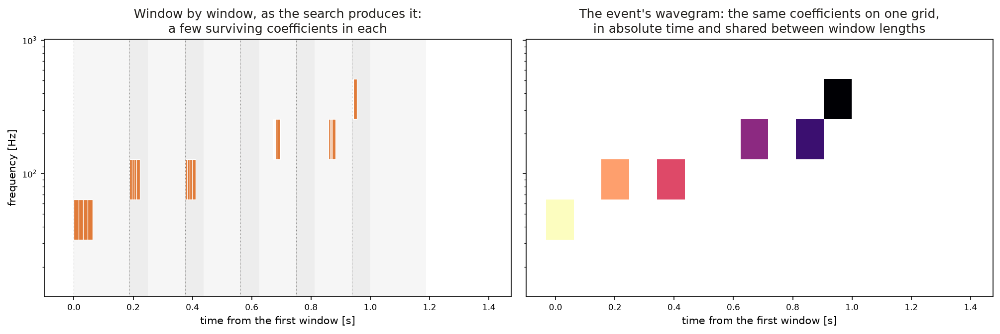
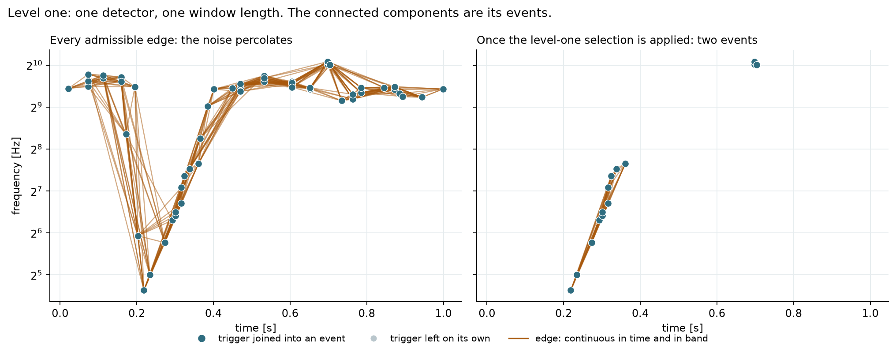
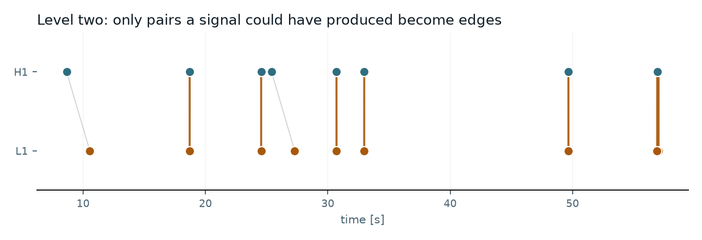

p4TSA
The C++ core: spectral estimation, time-domain whitening, the wavelet transform and the detection filter itself. Exposed to Python as a single compiled module, pytsa.
wavegram: each tile is one wavelet coefficient
Un-modelled transient search
A search for transient signals in gravitational-wave detector data. The data are whitened in the time domain, transformed in competing orthonormal wavelet bases, and each analysis window is scored by the norm of its surviving coefficients on the noise scale.
It runs in real time, at a latency that is fixed and known before the filter runs, and its per-window arithmetic is simple enough to put on an FPGA. No template and no signal model: every trigger carries the coefficients that produced it, so what a transient is can be decided afterwards, by whatever comes next.
Why wavelets
Matched filtering requires a template. Where no accurate waveform model exists — an un-modelled burst, or a detector glitch — WDF instead asks which of a set of orthonormal bases represents the data most compactly, and how much of the window's energy survives a threshold set by the noise alone.
Each window of whitened strain is transformed in every candidate basis. Coefficients below the Donoho–Johnstone universal threshold are set to zero; the threshold depends only on the noise scale and the number of coefficients, so it encodes no assumption about the signal's shape. The surviving coefficients are scored, and the basis giving the largest score is recorded for that window.
The score is the norm of the surviving coefficients on the noise scale:
ρ_WDF = ‖c‖₂ ⁄ σ
where c are the surviving coefficients and σ is the noise scale estimated in that window. The candidate bases are orthonormal, so by Parseval ‖c‖₂ = ‖x̂‖₂ and the score is the matched-filter signal-to-noise ratio of the reconstructed transient. The identity holds under two conditions: the noise the coefficients are measured against must be white, and the surviving coefficients must retain their amplitude — which is why the conditioning stage and the choice of hard thresholding both matter to the calibration. For ranking, that scale is read on the blocks around the window rather than on the window itself: a block's own estimate is a median absolute deviation over the data it holds, signal included, so a transient loud enough to be a candidate would otherwise be divided by a scale it inflated itself. The thresholding is untouched — which coefficients survive is decided by the block on its own, as a front end that sees one block at a time requires.
The pipeline, in order
An autoregressive lattice filter whitens the data in the time domain, which allows the search to run on streaming data. The filter is applied as its square root in the forward and backward directions, giving zero phase: the spectrum is flattened without displacing the transient in time.
Ten orthonormal bases — Haar, centred Daubechies at orders 4, 8, 12, 16, 20, Symlet 4 and 8, Coiflet 1 and 2 — transform the window independently. The basis with the largest score is recorded with the trigger.
The surviving coefficients give ρ_WDF; their time–frequency tiles and the inverse transform give peak time, frequency band and duration. No waveform is fitted at any point.
Connected components of the tile map group the windows a single transient spans. The reconstruction stitched across them measures the event's energy, counting each sample once; what ranks the event is the loudest of those windows. Events are paired between detectors wherever their stretches of time meet once one may shift by the light travel time widened by what each event declares its instant is worth, and their bands overlap; the difference of their own instants then ranks the pairs so admitted, and unphysical time shifts give the accidental background.
The wavegram
Consecutive windows step by less than their length, so a transient lasting longer than one window is divided across several triggers, each containing only the part that fell inside its own window. The loudest single window then carries a small fraction of the signal-to-noise ratio the whole signal has.
Mapping every surviving coefficient's tile to absolute time gives a time–frequency representation of the whole run, in which a transient is a connected component. The windows of that component are reassembled — each contributing only the region it alone covers, so no sample is counted twice — and ρ_WDF is evaluated over the full extent of the signal.
A signal spanning several windows is therefore measured once, over its whole extent, rather than by the best single window that happened to contain part of it. Measuring it is not selecting it: a hard threshold admits every tile at a floor of 2 ln N in normalised energy, so a sum over tiles accumulates that floor in the noise exactly as in the signal and grows with their number whether or not anything is there, and a tile earns its place in the ranking only when its excess exceeds half the event's mean excess per tile. Detection ranks a candidate on its loudest window, a maximum over quantities the search has already computed, and the whole-event norm is reported beside it as what the event is worth.
Parameter estimation
No waveform is fitted at any point, and the search does not even invert the transform to describe what it found: every parameter is a moment over the time–frequency tiles the surviving coefficients imply.
| Parameter | How it is measured |
|---|---|
| ρWDF | ‖c‖₂ ⁄ σ over the whole event when it spans several windows, which is the energy that measures it; the same norm over its loudest window alone is what ranks it for detection, and both are reported |
| gpsCentroid | the energy centroid of the tiles in time. It describes where an event's energy sits, and it is not what the coincidence times a pair on: a centroid depends on how much of the transient survived threshold in that detector, so two detectors at different projected amplitudes place it differently. It is the last resort of the instant a coincidence reads, behind the centre of the tile |
| gpsPeak | the centre of the tile carrying the largest coefficient. It is the instant a coincidence times a pair on, and it anchors the wavegram two detectors are compared on. What it can resolve is bounded by the tile it is the centre of, whose length is one over the upper edge of its own band |
| tSpread | the spread of the energy about that centroid, including each tile's own width |
| the wavegram | the event's coefficients on a band-by-time grid, anchored on the same loudest tile. Anchoring it on the energy centroid instead makes two detectors that kept different amounts of one transient compare maps offset by a large part of their own width, and their agreement then measures the difference in extent rather than in morphology |
| duration | the extent of the surviving tiles |
| duration90 | the interval holding the central 90% of the energy; one marginal tile cannot stretch it |
| freqMean | energy-weighted frequency of the tiles, in the log-frequency the dyadic tiling is uniform in |
| freqMin, freqMax | the band the tiles cover — the support, which is what the overlap tests read |
| freqQ05, freqQ95 | the band the energy occupies, which follows the signal rather than its faintest coefficient |
| snrPeak | the loudest coefficient on the noise scale σ |
ρWDF grows as √n with the number of samples a transient occupies, as an energy signal-to-noise ratio must, while snrPeak is an amplitude and does not — so snrPeak ≤ ρWDF by construction.
The wavegram, assembled

One analysis window
A dyadic transform ties the level of a coefficient to the band it occupies, so a tile of a given band lasts the same however long the block is. Doubling the window does not insert bands between the octaves and does not lengthen the tiles of the bands already there: it extends the ladder one octave downward, below the low-frequency cut.
Searching at several lengths therefore repeats one tiling on shifted grids of blocks rather than adding resolution, and pays a trials factor for the repetition. The cost is certain and the gain is not, which is why one length is the default rather than a ladder.
The transient longer than the block is the grouping's problem, not the window's. The block is a unit of computation; the event is the physical object, assembled afterwards from the coefficients of every block it touched, and its energy is measured on the reconstruction stitched across them. What ranks it for detection is a different quantity: the loudest of those blocks. A hard threshold admits every tile at a floor of 2 ln N in normalised energy, so a sum over tiles accumulates that floor in the noise as well as in the signal, while a maximum over blocks the search has already scored has a background that is a subset of the ungrouped one — the grouping then reduces the trials factor without being able to lose a candidate.
The length stays a parameter, and the machinery that makes several of them comparable stays with it: each is mapped through its own measured background onto a significance that means the same thing everywhere, so that taking the best of several is a look-elsewhere effect whose price is measured rather than assumed.
The network

The trigger is the node rather than the tile, because the labels that can train a model exist only there — an injection is stated to belong to a trigger, and nothing states which tiles are one transient — and because the statistic is a property of a window.
Connected components over every admissible edge is not the answer: triggers close in time and overlapping in band are common in noise, so what percolates is the noise. Deciding which of the admissible edges survive is what the detector-stage model does, and its threshold is fixed on a training stretch against a stated event-rate budget before the reported stretch is opened.
A node carries its trigger's wavegram on a band-by-time grid, so what reaches the model is how the trigger looks in the plane and not only where it sits. The rows are indexed by absolute frequency band, so the same physical band is the same row at every window length.
The events of each detector then become the nodes of the network graph, and an edge exists only where a signal could have produced the pair: the two events must cover the same stretch of time once one of them is allowed to shift by the light travel time, widened by what each declares its instant is worth, and their bands must overlap.
Admission is on the stretches of time and not on the difference of the instants, and stays so: a transient longer than one analysis window is assembled as several events and the two detectors need not keep the same one, so their instants can differ by far more than the light travel time although both belong to one signal, and gating on that difference would take evidence away from a candidate the detectors did assemble. The difference ranks the survivors instead — which is answerable only because each event has an instant of its own, taken on the tile it was ranked on rather than on where its energy happened to sit: a centroid depends on that detector’s own noise and on which coefficients survived threshold, and the two detectors do not agree on it.
An edge carries that difference: the two events’ own instants, the centre of the tile carrying each one’s largest coefficient. It is a property of one event, so a time slide carries it with the event and nothing is measured per pair — which is what a background of many millions of accidental pairs requires. What it resolves is bounded by the tiling: a tile’s length is tied to its band, so two detectors whose loudest tile falls on different rungs of the ladder report centres displaced by the difference of two tile lengths, which can exceed the light travel time. That is a bound on what an edge’s timing is worth, and tSpread is what declares it.

An edge carries the arrival-time difference and how much of its tolerance the pair consumed, the shared fraction of band and of time support, the log ratio of the two energies, the agreement between the two wavegrams, and the coherent amplitude over the tiles the pair shares. That last one keeps the coefficients’ signs: a product of magnitudes is positive whatever the data and grows with the number of tiles that meet, so two long events overlapping by accident would outscore two short ones describing one transient.
The agreement is a cosine between the two maps’ magnitudes, slid over the displacements the tolerance admits, on a bin no coarser than the shortest tile or the light travel time — coarser than either and the comparison either cancels an oscillating transient against itself or cannot represent the delay it exists to measure. It is taken on magnitudes because a coefficient carries the phase as well as the energy: two detectors resolve one transient onto different basis functions and at a delay finer than a bin, so their signed coefficients disagree cell by cell where the morphologies agree. It is bounded by one, so a pair that is merely loud cannot reach it.
No model output is a probability of astrophysical origin. Significance comes from time slides, which leave each detector’s noise intact while destroying any real coincidence; the unshifted data is the same construction at zero shift, so foreground and background are one population differently ordered. What a rate reads off that background is an order statistic, and an order statistic does not need the sample: the slides are reduced as they are formed, keeping the largest values of each ranking exactly and binning the rest, so the memory a background costs does not grow with the number of slides and every threshold says whether it came from the exact tail or from the histogram.
Two learned rankings read the graph, one supervised on labelled edges and one fitted on accidental coincidences alone. Both are read through the same background as the deterministic coherent amplitude, and a learned statistic that does not beat it at fixed false-alarm rate is not introduced. Efficiency is read as the excess over an accidental floor: injections placed in one detector only cannot be recovered in coincidence, so whatever fraction of them a statistic appears to recover is chance matching.
The same coincidence gives a direction. A sky region is drawn from an arrival-time difference and the uncertainty declared on it, and never from a spread chosen to make the region look small: what distinguishes a measurement from a picture is coverage, so the region of stated credibility has to contain the true direction that often over many injections. Two detectors give a ring rather than a point, so the whole weighted grid is reported and no best point is invented.
What a trigger stores
A window of N samples transforms into N coefficients, and thresholding at the Donoho–Johnstone level leaves very few of them — on noise, almost none; on a transient, a handful.
So a trigger keeps the pairs that survived, the index and the value, and not a dense vector of which all but a few entries are zero. The record is the survivors, and it is smaller by whatever fraction of the window the threshold kept.
It is not a compression applied afterwards. Hard thresholding sets a coefficient to zero or leaves it exactly as it was, so the zeros are the algorithm's statement that nothing was there — and writing them down at eight bytes each records that statement a thousand times per window.
It is also what hardware can carry. The per-window arithmetic is a fixed sequence of multiply-accumulate steps, with no iteration to convergence and no data-dependent branching, so it can be placed on an FPGA. What such an implementation cannot comfortably do is buffer and ship a dense vector per window, per length, per detector. A few index-value pairs is a small record whose size is known before the data arrives, which is the kind of object a hardware pipeline is built around.
Software
The C++ core: spectral estimation, time-domain whitening, the wavelet transform and the detection filter itself. Exposed to Python as a single compiled module, pytsa.
The pipeline. Trigger generation on top of pytsa, and the analysis layer — clustering on the wavegram, reconstruction across windows, multi-detector coincidence, background and false-alarm probability — which runs on saved trigger files without the compiled core.
Downstream
A framework for multi-messenger astronomy, which will use WDF as its event trigger generator.
Superseded code. The earlier wdf package,
and the WDF pipeline code that preceded it, are kept for reference only: they are not maintained
and they do not carry the wavegram, the event graph or the coincidence stage described here.
wdflow is the current implementation, and new work should start from it.
Getting started
The analysis layer — clustering, coincidence, background, ROC — runs on saved trigger files and needs nothing compiled. wdflow is not on an index, so it installs from a checkout, and everything it depends on comes from PyPI:
git clone https://github.com/elenacuoco/wdflow cd wdflow pip install -e ".[all]"
Trigger generation additionally needs p4TSA, built from its own source. It is not on PyPI, and the pytsa package that is on PyPI is an unrelated project, so install it from the repository:
# from a p4TSA checkout pip install . # confirm you got the compiled module python -c "import pytsa; print(pytsa.__file__)"
Dependencies
| Group | Packages | Needed for |
|---|---|---|
| core | numpy, scipy, pandas, pyarrow, h5py, scikit-learn, matplotlib | always installed; the analysis layer runs on these alone |
| gnn | torch, torch_geometric | the learned cross-detector coincidence |
| data | gwpy | fetching public strain, plus a GWF backend (lalsuite or frameCPP) |
| mock | pycbc | generating simulated data sets with CBC injections |
| pipeline | coloredlogs | trigger-generation logging |
| tutorials | jupyter, nbclient, ipykernel | running the notebooks |
| docs | sphinx, sphinx-rtd-theme, myst-nb | building the documentation |
| dev | pytest | the test suite |
| p4TSA | GSL, FFTW3, FrameL, Boost.uBLAS, Cereal | not on any index; built from source, and required for trigger generation |
Python 3.10 or newer.
Tutorials
No external data set and no frame file is required, so they run on a fresh checkout. The third needs no compiled core at all.
One window of whitened data: the transform, Parseval, thresholding, the competition between the ten bases, and what each estimated parameter means — including why the three signal-to-noise quantities are ordered as they are.
open notebook requires pytsa
Reading the peak frequency off the time–frequency tiles and comparing it with the periodogram, then recovering a transient that spans several analysis windows by percolation and stitched reconstruction.
open notebook requires pytsa
Multi-detector coincidence within the light-travel time, accidental background from unphysical time shifts, false-alarm probability and ROC — using the analysis layer alone.
open notebook no compiled core
A chirp longer than the analysis window, reassembled from the coefficients of every block it touched. Why the weight that joins two blocks has to vanish at their edges, and why the case for it is made on the phase and not on the amplitude — an average agrees while a phase walks.
open notebook requires pytsa
Publications
Use of this code in published work requires citation of the references below: the paper describing the pipeline in the form implemented here, the original method paper for the Wavelet Detection Filter, and the papers describing the autoregressive time-domain whitening the conditioning stage implements.
The Wavelet Detection Filter
WDFX
Time-domain whitening